Panduan ini membantu pemilik, sales, dan admin memahami alur kerja harian: dari follow-up pelanggan, quotation, PO, hingga buyback mitra kolam. Termasuk pengelolaan Master Data dan link publik yang bisa dibuka pelanggan tanpa login. Setiap gambar dapat diklik untuk diperbesar.
Saung Lele CRM dipakai bersama oleh pemilik, sales, dan admin. Setiap peran melihat menu yang sama, tetapi fokus pekerjaannya berbeda.
01
Tujuan sistem ini sederhana: tidak ada pelanggan yang terlupakan dan tidak ada janji follow-up yang hilang. Semua interaksi, penawaran, pesanan, dan siklus buyback tercatat di satu tempat.
PemilikMelihat health pelanggan, pipeline, PO berjalan, laporan retensi, dan performa segmen. Fokus pada keputusan dan tindakan win-back.
SalesMenghubungi pelanggan, mencatat interaksi, membuat follow-up, quotation, dan memantau lead. Fokus pada hubungan dan closing.
Admin OperasionalMenerima PO, memantau produksi/pengiriman, mencatat delivery, mengelola buyback, dan memastikan data tetap rapi.
Cara memakai panduan ini: gunakan kolom pencarian untuk menemukan fitur, klik gambar untuk memperbesar, dan centang checklist di bagian akhir agar tim tahu apa yang sudah siap.
1
Siapkan akun dan data awalDaftar pengguna, data pelanggan/lead, produk, harga, dan termin pembayaran.
2
Atur alur follow-upTentukan siapa penanggung jawab dan kapan pengingat dibuat.
3
Coba satu transaksi end-to-endPelanggan → quotation → PO → delivery, lalu satu siklus buyback.
Akses
Login dan masuk ke dashboard
Gunakan akun yang diberikan admin. Setelah login, pengguna langsung diarahkan ke dashboard.
02
1
Buka alamat aplikasiContoh lokal: http://127.0.0.1:8000. Di server produksi, gunakan domain yang diberikan KebunKode.
2
Masukkan email dan passwordGunakan akun sesuai peran. Jangan berbagi password antar pengguna.
3
Klik “Log in”Jika berhasil, dashboard akan menampilkan follow-up hari ini dan ringkasan bisnis.
login
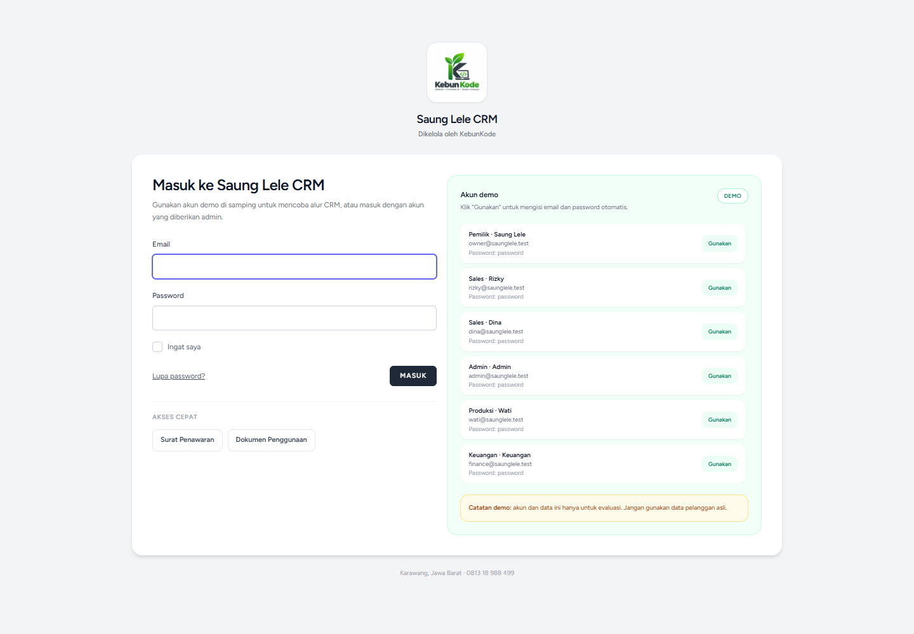
Halaman login. Gunakan akun yang sudah dibuat admin.
Peran demo
Email
Password
Pemilik
owner@saunglele.test
password
Sales
rizky@saunglele.test
password
Admin
admin@saunglele.test
password
Akun di atas hanya untuk demo/evaluasi. Ganti password dan buat akun tim sebelum sistem dipakai sehari-hari.
Modul harian
Dashboard: mulai dari yang paling mendesak
Dashboard menjawab satu pertanyaan: “Siapa yang harus dihubungi hari ini?”
03
dashboard
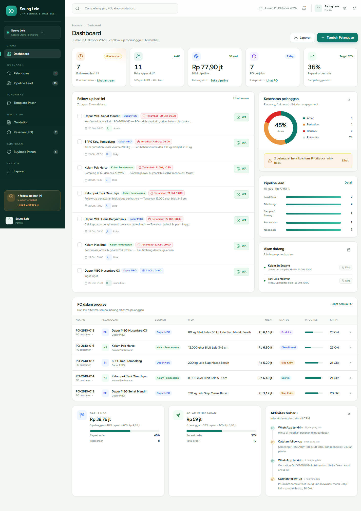
KPI, follow-up hari ini, health pelanggan, pipeline, PO berjalan, dan performa segmen.
1
Cek follow-up hari iniDaftar diurutkan dari yang paling mendesak. Item merah berarti sudah terlambat.
2
Klik tombol WAWhatsApp terbuka dengan pesan awal. Setelah dikirim, pesan dicatat ke timeline pelanggan.
3
Tandai selesai atau tundaCentang tugas untuk menyelesaikan cepat dari dashboard. Untuk menulis hasil dan menjadwalkan follow-up berikutnya, buka detail pelanggan lalu gunakan tombol Selesaikan/Tunda.
4
Lihat panel “Akan datang”Jadwal beberapa hari ke depan tetap terlihat, tanpa mencampuri antrean hari ini.
5
Periksa health & pipelineHealth menunjukkan pelanggan yang perlu perhatian; pipeline menunjukkan peluang yang sedang berjalan.
Follow-up hari ini hanya memuat jadwal hari ini dan yang sudah lewat. Jadwal besok/lusa muncul di panel Akan datang.
Modul harian
Pelanggan: simpan profil dan lihat kesehatan hubungan
Semua pelanggan Dapur MBG dan Kolam Pembesaran ada di satu daftar.
04
pelanggan
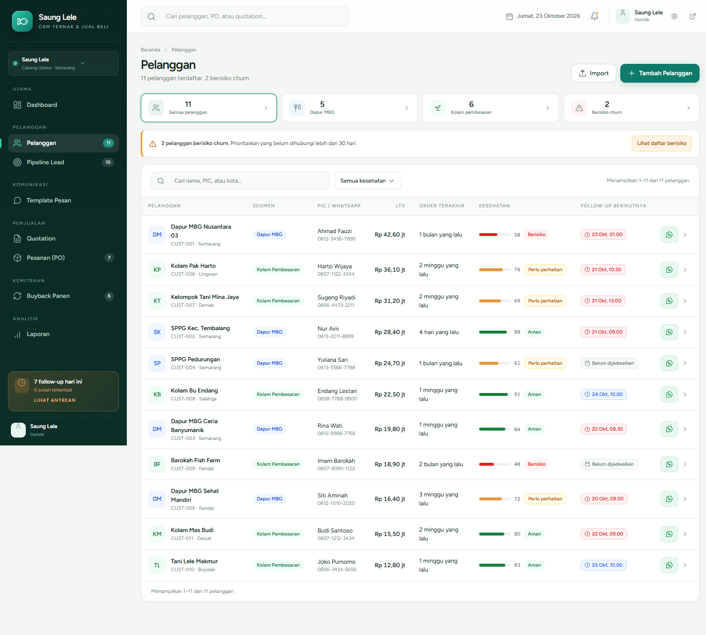
Filter segmen, pencarian, health score, LTV, order terakhir, dan follow-up berikutnya.
1
Klik “Tambah Pelanggan”Isi nama usaha, segmen, PIC, WhatsApp, kota, dan sumber lead. Field berbeda muncul sesuai segmen.
Cari dengan cepatCari nama, PIC, atau kota. Filter kesehatan membantu menemukan pelanggan yang perlu perhatian.
4
Baca health scoreHijau aman, kuning perlu perhatian, merah berisiko. Klik nama untuk melihat detail dan timeline.
Jika pelanggan masih sedikit (satu halaman), kontrol pagination disembunyikan agar tampilan lebih bersih. Kontrol akan muncul otomatis saat data lebih dari satu halaman.
Modul harian
Detail pelanggan: catat, ingatkan, dan tindak lanjuti
Ini adalah halaman kerja utama sales. Semua konteks pelanggan ada di sini.
Baca ringkasan profilLihat segmen, PIC, WhatsApp, sales, health score, LTV, jumlah order, dan rata-rata order.
2
Catat interaksi & hasilPilih jenis (catatan, telepon, WhatsApp, kunjungan), tulis apa yang terjadi, lalu isi Hasil / kesimpulan. Hasil ini tampil di timeline.
3
Simpan & ingatkanSistem membuat follow-up baru dan menampilkannya di dashboard pada tanggal yang dipilih.
4
Selesaikan atau tunda follow-upKlik Selesaikan/Tunda. Isi hasil follow-up; untuk Tunda pilih tanggal baru. Hasil otomatis masuk timeline.
5
Hubungkan ke follow-up berikutnyaSaat menyelesaikan, isi tanggal follow-up berikutnya bila perlu. Pengingat baru dibuat dengan hasil terakhir sebagai catatan, lalu muncul di kartu Follow-up berikutnya.
6
Gunakan tabLihat timeline lengkap, quotation, PO, buyback, dan dokumen tanpa berpindah halaman. Di tab Timeline ada tombol Catat hasil.
7
Kirim template cepatKlik template yang sesuai. Pesan dibuka di WhatsApp dan dicatat ke timeline setelah dikirim.
hasil follow-up
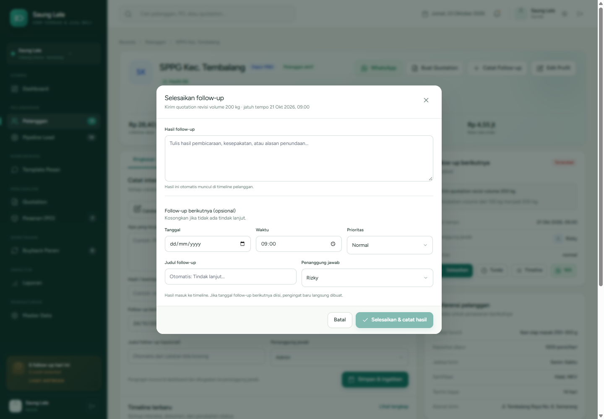
Modal Selesaikan follow-up: hasil wajib diisi, lalu opsional menjadwalkan follow-up berikutnya.
Follow-up berikutnya adalah follow-up berstatus terbuka dengan jatuh tempo paling dekat. Hasil Selesaikan/Tunda dan catatan interaksi masuk ke timeline yang sama, jadi riwayat dan pengingat tetap terhubung. Jika jadwal dibuat tanggal 23 pukul 01.00, jadwal muncul di dashboard tanggal 23 (zona waktu Asia/Jakarta).
Modul harian
Pipeline lead: jangan biarkan peluang menggantung
Lead bergerak dari Lead Baru sampai Negosiasi. Setiap kartu punya next action.
06
pipeline lead
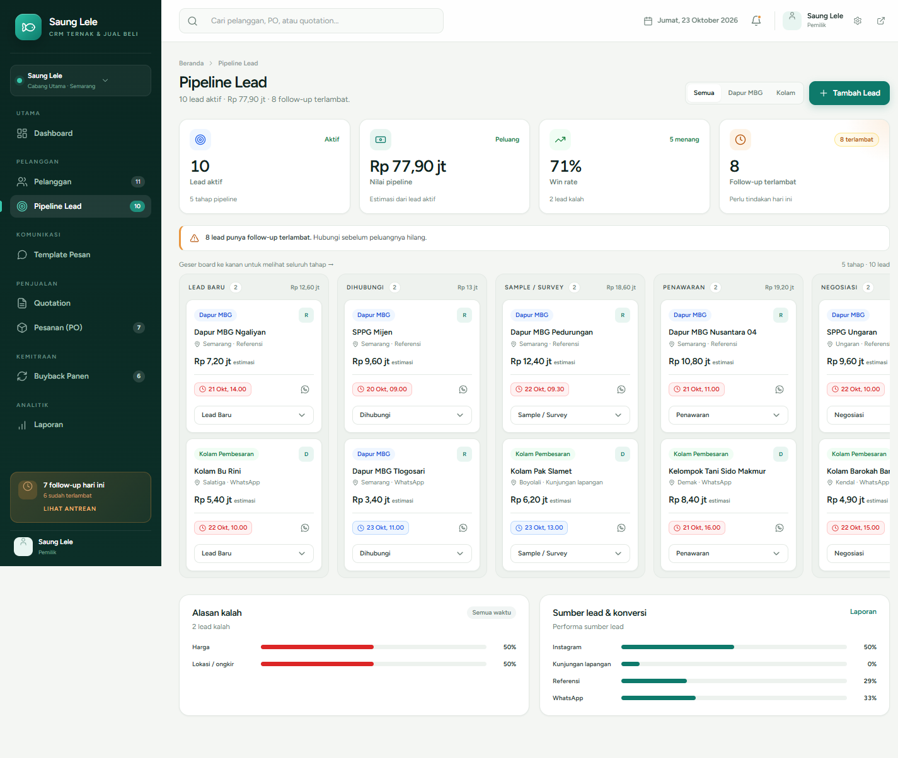
Kanban lead, nilai peluang, sumber, next action, dan alasan kalah.
1
Tambahkan lead baruIsi nama, segmen, sumber, estimasi nilai, WhatsApp, dan tanggal follow-up pertama.
2
Pindahkan tahapGunakan dropdown di kartu untuk mengubah tahap. Kartu pindah ke kolom yang sesuai.
3
Tandai menangMemilih “Menang” akan membuat profil pelanggan baru secara otomatis, lalu lead terhubung ke pelanggan tersebut.
4
Catat alasan kalahAlasan membantu melihat pola: harga, stok, lokasi, kualitas, atau kompetitor.
Setelah lead menjadi “Menang”, lengkapi profil pelanggan dan preferensinya di halaman detail.
Penjualan
Template WhatsApp: pesan konsisten, tetap personal
Gunakan template agar tim tidak menulis pesan dari nol setiap kali.
07
template pesan
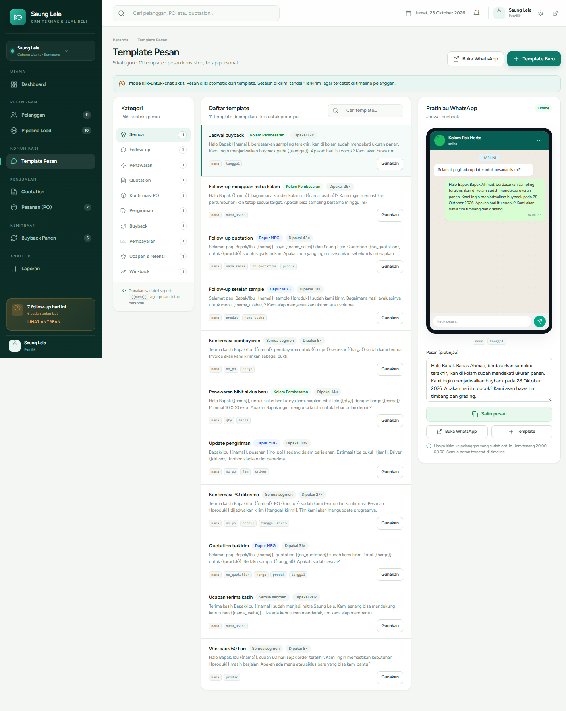
Kategori, daftar template, pratinjau WhatsApp, variabel, dan form template baru.
Pilih templatePratinjau WhatsApp langsung berubah. Variabel seperti {{nama}} dan {{produk}} akan diganti saat dipakai.
3
Salin atau gunakanKlik “Gunakan” untuk menyalin pesan, lalu tempel di WhatsApp. Dari detail pelanggan, pesan langsung dibuka dan dicatat.
4
Buat template baruTentukan nama, kategori, segmen, isi pesan, dan variabel. Simpan agar bisa dipakai tim.
Fase saat ini adalah klik-untuk-chat. Integrasi WhatsApp Cloud API (kirim otomatis dan status delivered/read) tersedia sebagai layanan tambahan.
Penjualan
Quotation: penawaran sesuai segmen
Dapur MBG mendapat ikan siap masak/fillet; Kolam Pembesaran mendapat bibit.
08
quotation builder
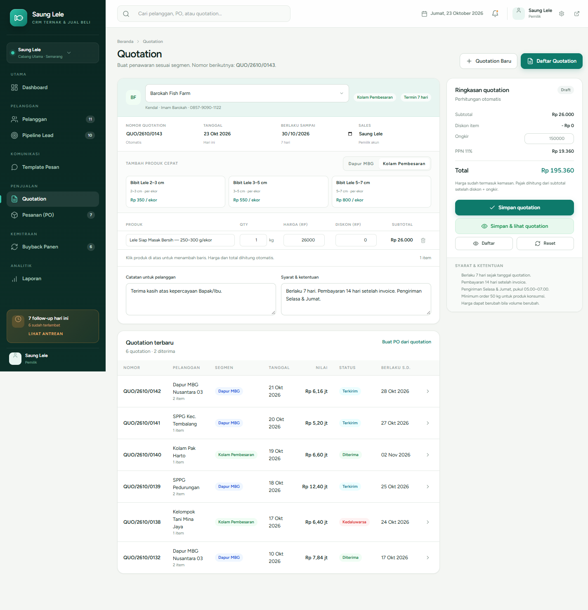
Pilih pelanggan, produk, qty, harga, diskon, ongkir, dan PPN.
dokumen quotation
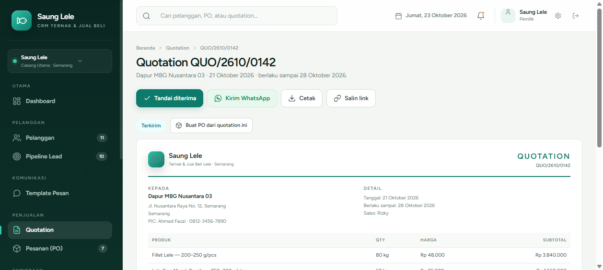
Pratinjau dokumen, status, tombol kirim WhatsApp, cetak, dan Salin link publik.
daftar quotation
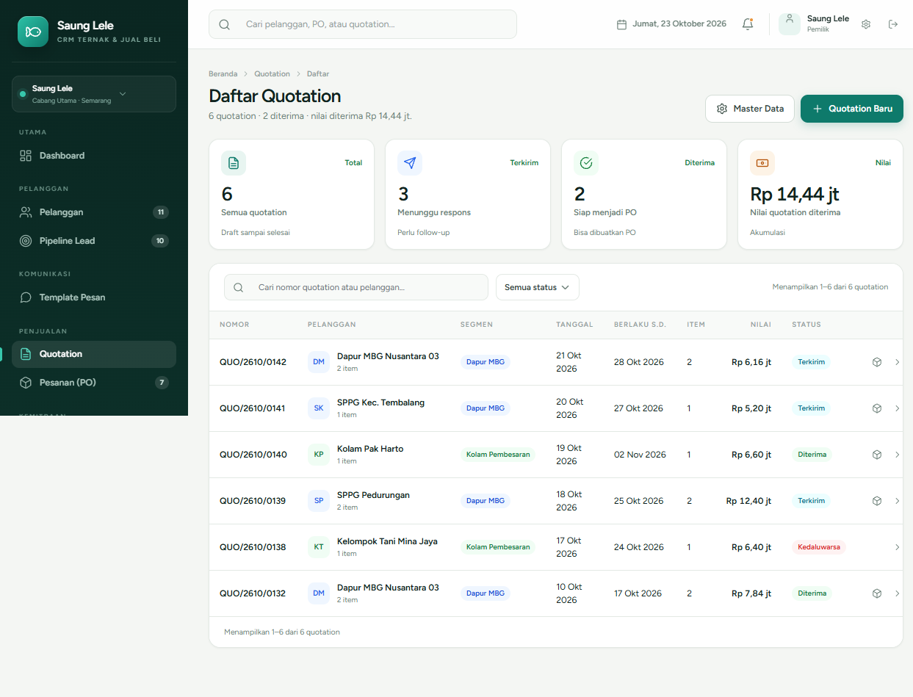
Halaman Daftar Quotation: pencarian, filter status, nilai diterima, serta aksi buka, edit, dan buat PO.
1
Pilih pelangganSegmen otomatis menentukan katalog produk yang ditampilkan.
2
Tambahkan produkKlik kartu produk untuk menambah baris. Sesuaikan qty, harga, dan diskon.
3
Atur ongkir & pajakSubtotal, diskon, ongkir, PPN, dan total dihitung otomatis.
4
Simpan & cetakSetelah disimpan, buka halaman quotation untuk kirim WhatsApp, salin link publik, atau cetak PDF.
5
Cek daftar quotationTombol Daftar Quotation dan Daftar mengarah ke tabel Quotation terbaru di halaman yang sama. Klik Lihat semua untuk membuka halaman riwayat lengkap dengan pencarian dan filter status.
6
Edit quotationKlik Edit Quotation pada quotation berstatus draft, terkirim, revisi, ditolak, atau kedaluwarsa. Quotation yang sudah diterima atau sudah dipakai PO dikunci. Setelah disimpan, quotation non-draft menjadi Revisi.
7
Buat PO dari quotationKlik Buat PO dari quotation ini. Pelanggan, semua item, qty, harga, ongkir, pajak, termin, dan catatan langsung terisi di form PO. Item masih bisa disesuaikan sebelum disimpan.
8
Bagikan link publikKlik Salin link atau Kirim WhatsApp. Pesan WhatsApp otomatis menyertakan link quotation yang bisa dibuka pelanggan tanpa login.
Masa berlaku default quotation 7 hari. Link publiknya berlaku 30 hari dan bisa dibuat ulang kapan saja dengan menekan Salin link. Untuk bibit, sesuaikan masa berlaku quotation menjadi 14 hari bila diperlukan.
Penjualan
Pesanan (PO): dari diterima sampai delivery
Pantau produksi, QC, pengiriman, dan bukti diterima pelanggan.
09
daftar PO
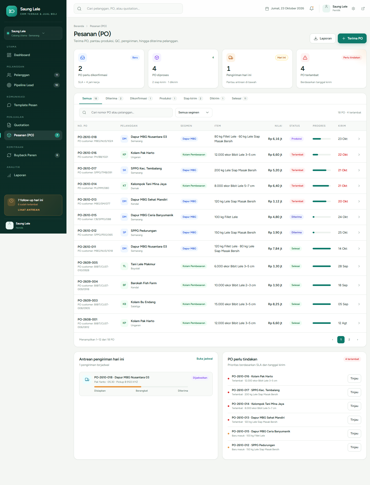
Filter status, progres, tanggal kirim, dan antrean pengiriman hari ini.
detail PO
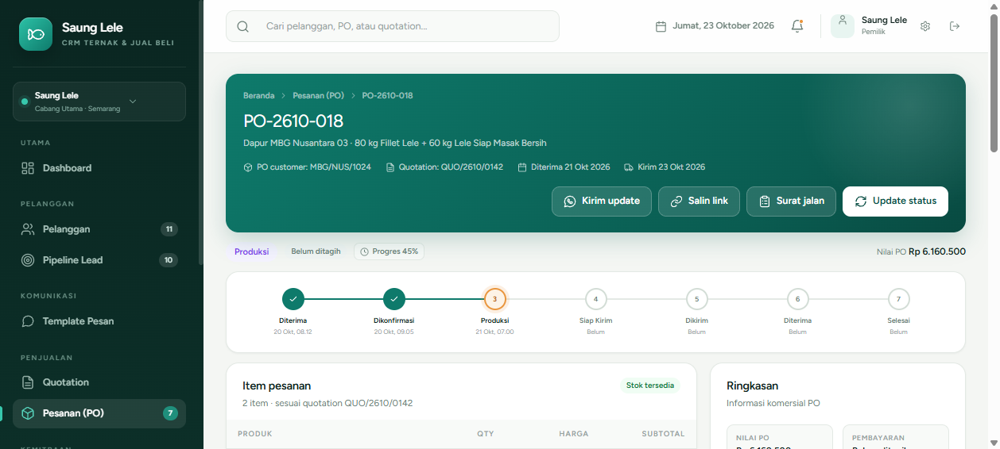
Stepper 7 tahap, item, riwayat, delivery, dokumen, dan checklist.
1
Terima POIsi pelanggan, nomor PO customer, referensi quotation, tanggal kirim, dan item. Dari quotation, klik Buat PO dari quotation ini agar pelanggan, item, qty, harga, ongkir, pajak, dan termin terisi otomatis.
2
KonfirmasiValidasi stok, harga, dan jadwal. Status berubah dari Diterima ke Dikonfirmasi.
3
Produksi & QCUpdate status Produksi, lalu Siap Kirim setelah QC dan packing selesai.
4
Atur pengirimanTambahkan driver, kendaraan, jadwal, dan catatan. Cetak surat jalan dari halaman PO.
5
Konfirmasi diterimaSetelah pelanggan menerima, update status Diterima/Selesai dan catat bukti.
6
Bagikan link POKlik Salin link atau Kirim update. Pesan WhatsApp otomatis menyertakan link PO yang bisa dibuka pelanggan tanpa login.
Setiap perubahan status tercatat di riwayat. Pastikan update dilakukan berurutan agar laporan on-time delivery akurat. Link publik PO memakai token aman dan bukan halaman internal CRM.
Pengaturan
Master Data: produk cepat & template syarat
Kelola data yang dipakai berulang agar quotation baru lebih cepat dibuat dan tetap konsisten.
10
produk cepat
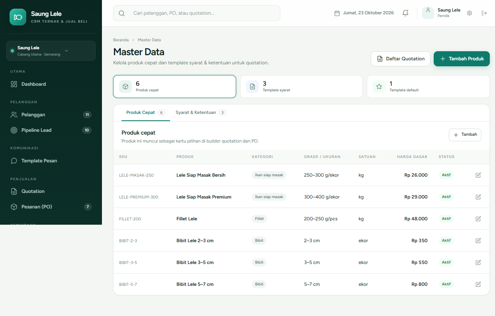
Daftar produk cepat: SKU, kategori, grade/ukuran, satuan, harga dasar, dan status aktif.
syarat & ketentuan
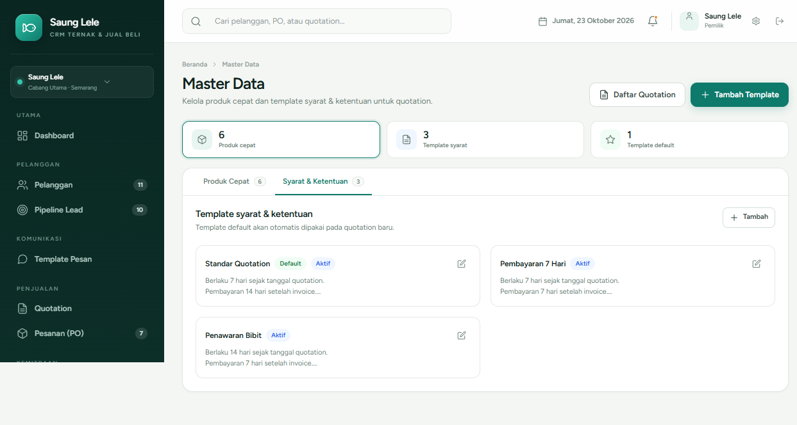
Template syarat & ketentuan. Tandai satu template sebagai default untuk quotation baru.
1
Buka Pengaturan → Master DataMenu ini ada di sidebar paling bawah. Gunakan tab Produk Cepat atau Syarat & Ketentuan.
2
Kelola produk cepatTambah atau edit SKU, nama, kategori (ikan siap masak/fillet/bibit), grade, satuan, dan harga dasar. Produk aktif otomatis muncul sebagai kartu di builder quotation dan form PO.
3
Kelola template syaratTambah atau edit template, lalu tandai Default agar otomatis dipakai saat membuat quotation baru. Hanya satu template yang bisa menjadi default.
4
Nonaktifkan yang tidak dipakaiProduk atau template nonaktif tidak muncul di pilihan baru, tetapi data lama tetap tersimpan.
Perubahan harga atau template berlaku untuk dokumen baru. Quotation/PO yang sudah dibuat tetap memakai harga dan syarat yang tersimpan di dokumen tersebut.
Pengaturan
Link publik: pelanggan lihat tanpa login
Bagikan quotation dan PO lewat WhatsApp tanpa perlu melampirkan file PDF.
11
quotation publik
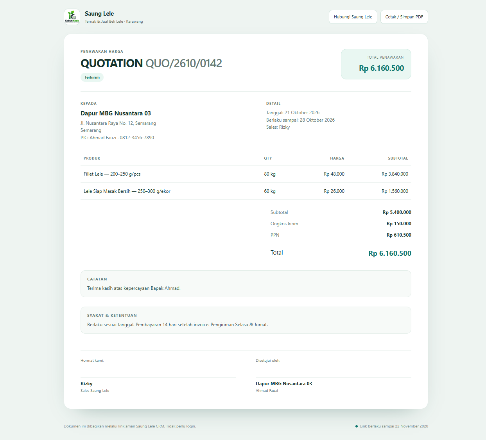
Quotation publik: branding Saung Lele, data pelanggan, item, total, syarat, dan tombol cetak.
PO publik
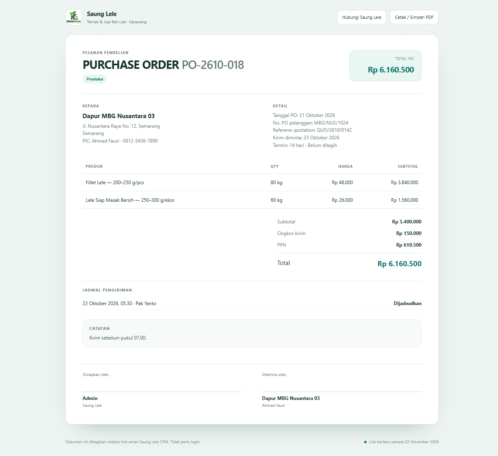
PO publik: status, item, total, jadwal pengiriman, dan tombol cetak tanpa login.
1
Buka quotation atau POGunakan tombol Salin link untuk mendapatkan tautan, atau langsung klik Kirim WhatsApp / Kirim update.
2
Link masuk ke pesan WhatsAppPesan tetap memuat nomor, total/status, dan ditambah baris Lihat quotation atau Lihat PO. Pelanggan cukup klik link.
3
Pelanggan membuka tanpa loginHalaman publik menampilkan dokumen resmi, bisa dicetak atau disimpan sebagai PDF dari browser. Tidak ada menu internal CRM.
4
Token diverifikasi serverLink berisi token terenkripsi berisi jenis dokumen, ID, dan masa berlaku. Token palsu atau kedaluwarsa akan ditolak. Masa berlaku 30 hari; buat link baru dengan menekan Salin link lagi.
Link publik bersifat seperti kunci: siapa pun yang memegang link dapat membuka dokumen. Kirim hanya ke pelanggan atau pihak yang berkepentingan. Jangan meneruskan link ke grup umum.
Saat demo lokal, link mengarah ke 127.0.0.1:8000. Setelah dipasang di server, pastikan APP_URL memakai domain HTTPS, misalnya https://saunglele.kebunkode.com, agar link bisa dibuka dari HP pelanggan.
Kemitraan
Buyback panen: dari bibit sampai pembayaran
Pantau pertumbuhan ikan mitra dan jadwalkan pembelian kembali.
12
buyback panen
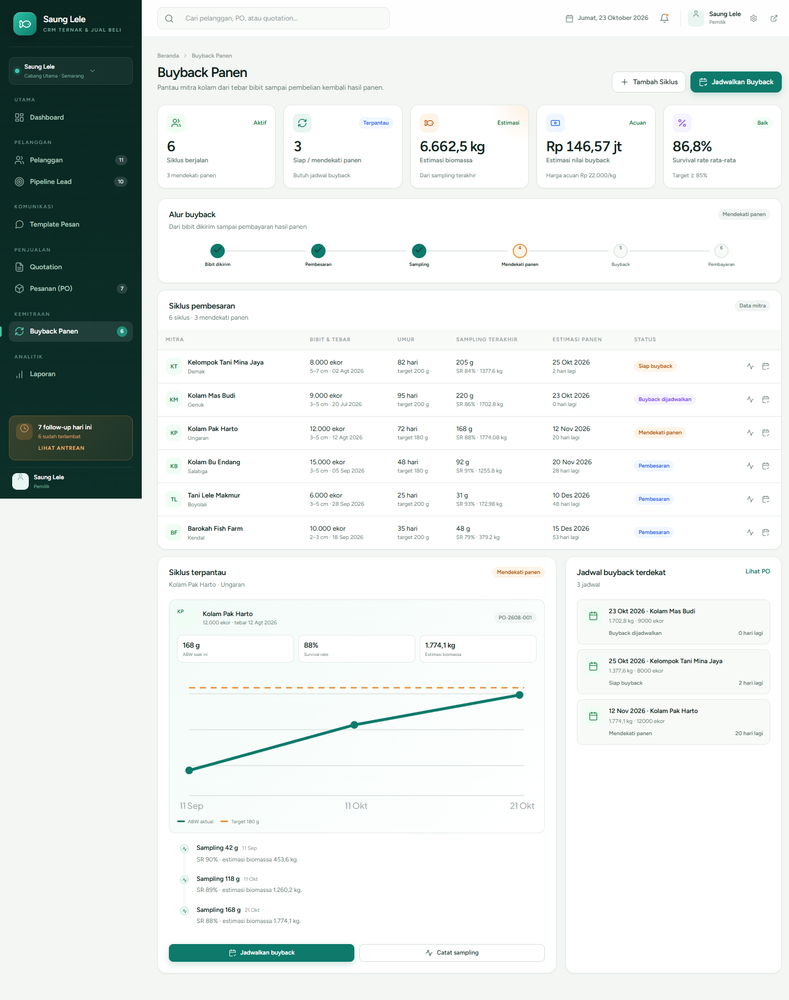
Siklus mitra, sampling ABW/SR, grafik pertumbuhan, estimasi panen, dan jadwal buyback.
1
Buat siklusPilih mitra, tanggal tebar, jumlah/ukuran bibit, target ABW, dan estimasi panen.
2
Catat samplingMasukkan jumlah sampel, ABW, dan estimasi SR. Sistem menghitung biomassa.
3
Pantau grafikGaris ABW aktual dibanding target. Status bergerak ke Mendekati Panen/Siap Buyback.
4
Jadwalkan & selesaikanAtur tanggal, tim timbang, harga acuan, lalu catat settlement setelah panen.
Estimasi biomassa = jumlah bibit × SR × ABW ÷ 1.000. Angka ini membantu memperkirakan berat panen dan nilai buyback.
Analitik
Laporan: lihat retensi dan operasi dalam satu pandangan
Gunakan laporan untuk keputusan mingguan, bukan sekadar arsip.
13
laporan
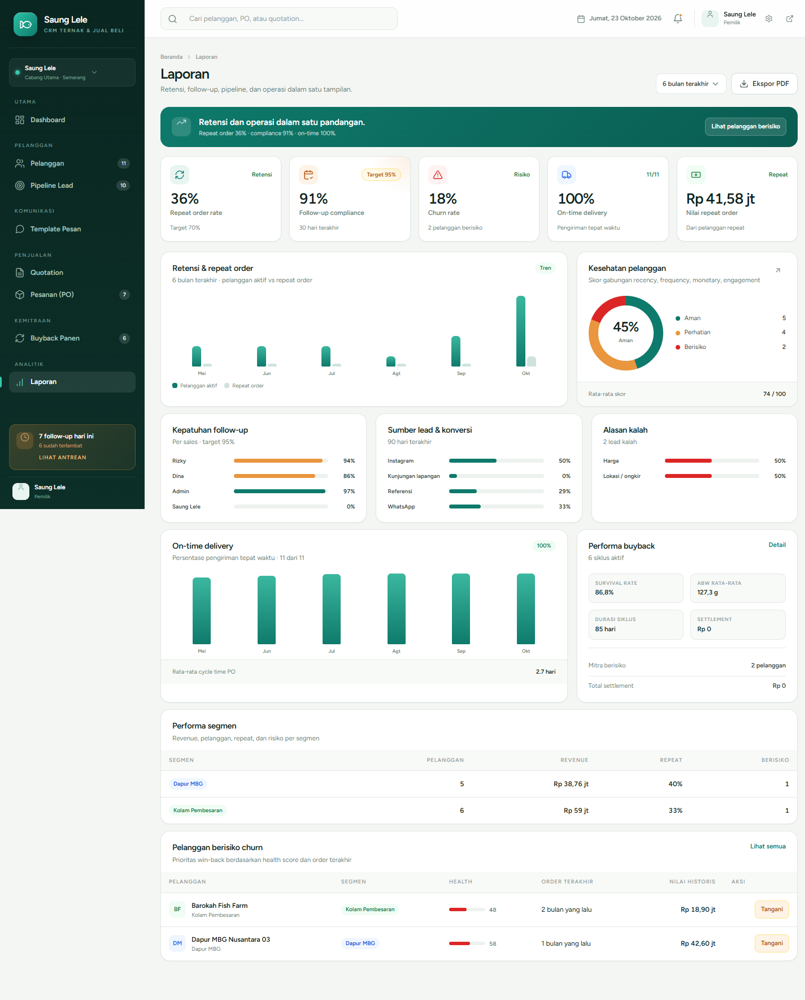
Repeat order, health, compliance, sumber lead, on-time delivery, dan pelanggan berisiko.
1
Pilih rentang waktuGunakan 6 bulan, bulan ini, atau 90 hari untuk melihat tren.
2
Baca retensiRepeat order dan churn menunjukkan apakah hubungan pelanggan membaik.
3
Cek compliance follow-upLihat siapa yang paling banyak meninggalkan tugas dan tindak lanjuti.
4
Tinjau pelanggan berisikoKlik “Tangani” untuk membuka pelanggan dan menyiapkan win-back.
Kebiasaan
Alur kerja harian yang disarankan
Lima ritual singkat agar CRM tidak menjadi pekerjaan tambahan.
SiangProses quotation, konfirmasi PO, update produksi, dan atur jadwal pengiriman.
SoreCek pengiriman, buyback mendatang, dan pelanggan berisiko. Tutup dengan laporan singkat.
Aturan emas: setelah menelepon atau mengirim WhatsApp, langsung catat hasilnya. Jangan menunda sampai lupa.
Implementasi
Checklist kesiapan Saung Lele
Centang satu per satu. Progres tersimpan di browser ini.
15
0 / 16 · 0% selesai
Progres otomatis tersimpan di browser.
Pertanyaan umum
FAQ singkat
Hal yang paling sering ditanyakan saat evaluasi sistem.
16
Apakah sistem bisa dibuka dari HP?
Bisa. Antarmuka responsif dan dapat dipakai dari browser HP. Untuk penggunaan lapangan, disarankan koneksi stabil.
Apakah WhatsApp terkirim otomatis?
Pada fase saat ini, sistem membuka WhatsApp dengan pesan yang sudah terisi (klik-untuk-chat), lalu pesan dicatat ke timeline. Pengiriman otomatis dan status delivered/read memerlukan integrasi WhatsApp Cloud API sebagai layanan tambahan.
Apakah data pelanggan aman?
Data disimpan di database dengan akses berbasis peran, koneksi HTTPS, dan backup. Data milik Saung Lele dan dapat diekspor.
Berapa lama setup awal?
Untuk data awal yang sudah rapi, setup dan training dasar biasanya 3–7 hari kerja. Durasi bergantung pada jumlah data dan kesiapan tim.
Apakah bisa menambah pengguna atau cabang?
Bisa. Pengguna tambahan dan cabang tambahan tersedia sebagai layanan bulanan. Untuk kebutuhan besar, paket Business lebih sesuai.
Apakah ada kontrak minimum?
Skema referensi menggunakan minimum 3 bulan, lalu dapat diperpanjang bulanan. Ketentuan ini dapat disesuaikan.
Bagaimana jika ingin berhenti?
Beritahukan minimal 30 hari sebelum periode berikutnya. Data dapat diekspor sebelum akun dinonaktifkan.
Apakah harga bisa disesuaikan?
Ya. Harga dalam surat penawaran adalah referensi. Paket, jumlah pengguna, dan cara pembayaran dapat didiskusikan.
Apakah pelanggan perlu login untuk melihat quotation/PO?
Tidak. Klik Salin link atau kirim lewat WhatsApp. Link publik memakai token terenkripsi dan hanya menampilkan dokumen yang dimaksud, tanpa menu internal CRM.
Berapa lama link publik berlaku?
Link publik berlaku 30 hari. Jika sudah kedaluwarsa, buka quotation/PO dan klik Salin link lagi untuk membuat tautan baru.
Apakah quotation bisa diedit?
Bisa untuk quotation draft, terkirim, revisi, ditolak, atau kedaluwarsa. Quotation yang sudah diterima atau sudah dipakai PO dikunci agar tidak bentrok. Setelah disimpan, quotation non-draft menjadi Revisi.
Bagaimana hasil follow-up masuk ke timeline?
Saat menekan Selesaikan atau Tunda, isi Hasil follow-up. Sistem menyimpan hasil itu sebagai entri timeline. Jika tanggal follow-up berikutnya diisi, pengingat baru otomatis dibuat dengan hasil terakhir sebagai catatan.
Tidak ada bagian yang cocokCoba kata kunci lain seperti “quotation”, “follow-up”, atau “buyback”.